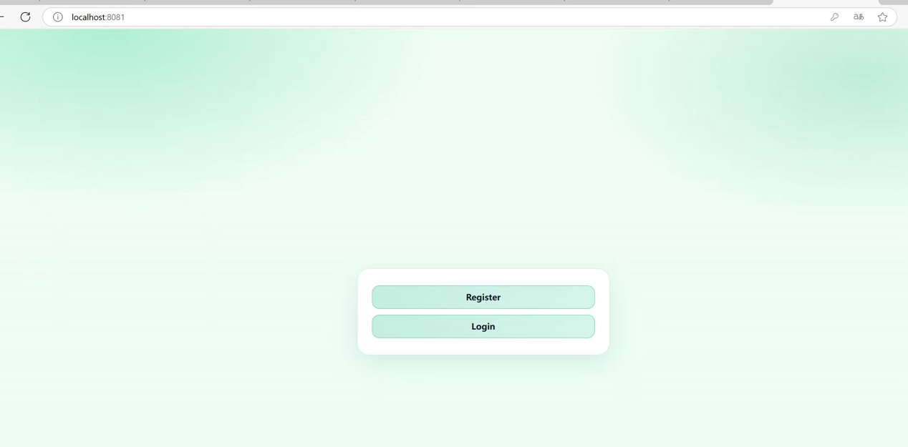
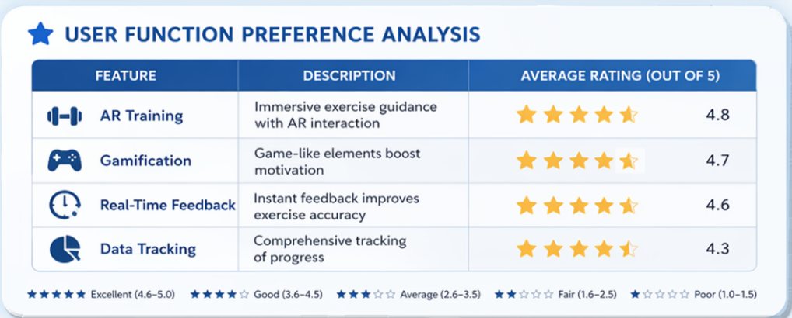
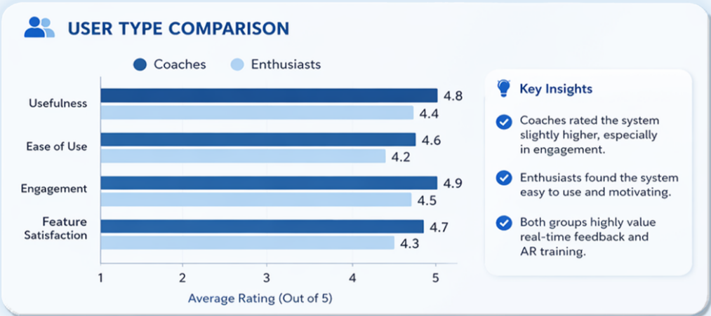
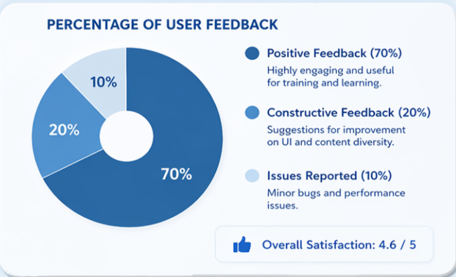
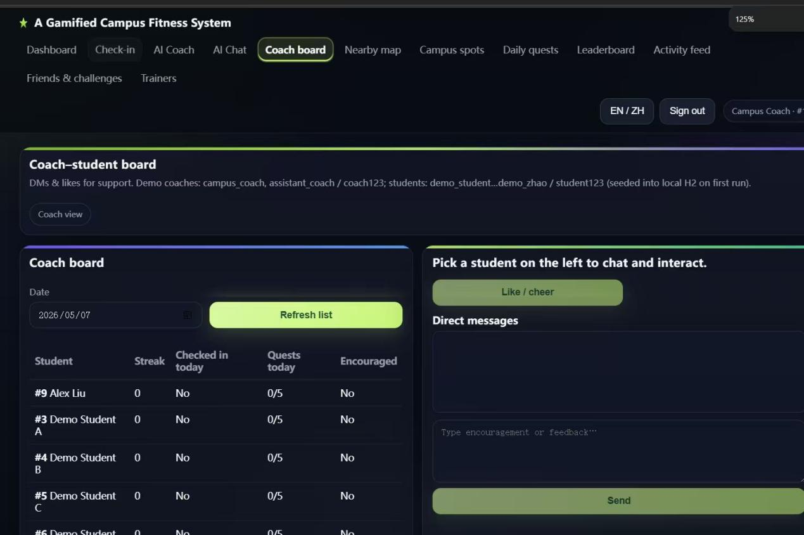

Problem
AI coach entry was difficult to locate
Change
Moved AI coach to the homepage
Result
Improved feature visibility and accessibility
To evaluate the effectiveness and usability of the proposed system, a user testing study was conducted with representative target users.
A total of 6 participants were recruited for testing:
Participants were asked to complete the following tasks:
After completing the tasks, participants provided feedback through a short questionnaire and informal interviews.
The collected results are summarized as follows:
Overall, most users responded positively to both usability and engagement aspects of the system.



The results indicate that the integration of gamification significantly improves user motivation and engagement, which supports the initial design objective of encouraging consistent exercise behavior.
However, some usability issues were identified, particularly in navigation clarity. This suggests that while the system is effective in motivating users, further refinement is needed to enhance the overall user experience.
The findings demonstrate that balancing simplicity with engaging features is critical in fitness system design.
Based on user feedback, several improvements were identified:
These improvements aim to further optimize user experience and reduce interaction friction.
This evaluation has several limitations:
Future work should include larger-scale and longer-term user studies to obtain more reliable results.
Overall, the evaluation demonstrates that the system successfully meets its core objective of improving user motivation while highlighting areas for further refinement.
Based on user testing feedback, several key improvements were implemented:

AI coach entry was difficult to locate
Moved AI coach to the homepage
Improved feature visibility and accessibility

Visual design was too plain
Enhanced color scheme and visual hierarchy
Increased user engagement and visual appeal

Weak sense of achievement after task completion
Added pop-up feedback and reward indicators
Strengthened motivation and user satisfaction

Social interaction steps were complex
Simplified interaction flow and reduced page transitions
Improved usability and efficiency
In terms of social and ethical significance, this gamified campus fitness system actively responds to the goal of promoting a healthier campus environment and improving college students’ physical well-being. By combining lightweight interaction design with gamification elements, the system encourages users to build long-term exercise habits in a more engaging and sustainable way, helping to address the common issue of low physical activity among students.
Throughout the design process, particular attention was paid to data privacy and ethical considerations. The system follows the principle of minimal data collection and informed consent. All user data is used solely for system functionality and academic purposes, and anonymization techniques are applied to reduce the risk of privacy leakage. These measures ensure that the design aligns with current digital product ethics and user data protection standards.
However, several limitations should also be acknowledged. The current evaluation is based on a relatively small number of users, which may not fully represent the broader student population. Future work should involve larger-scale testing to improve the reliability and generalizability of findings.
Overall, this project highlights the importance of balancing user engagement with ethical responsibility, ensuring that technology contributes positively to users’ well-being in a safe and responsible manner.
From the perspective of AI application, the AI coach serves as a core feature by providing personalized fitness recommendations and interactive guidance. This helps address the lack of accessible professional coaching resources on campus and improves the efficiency of delivering tailored exercise advice. In this sense, AI enhances both the scalability and practicality of the system.
Despite these advantages, several challenges remain. While AI-generated recommendations are useful, there is a potential risk of over-reliance on automated suggestions. Ensuring the accuracy, safety, and scientific validity of these recommendations remains an important concern.
In addition, issues such as algorithmic bias and limited personalization depth may affect user experience, especially for individuals with diverse fitness levels or specific needs. Future improvements should focus on enhancing data diversity and continuously optimizing the underlying algorithms to provide more inclusive and reliable support.
Overall, this project demonstrates the potential of integrating AI into fitness systems, while also emphasizing the need for careful design and continuous evaluation. AI should be positioned as a supportive tool that enhances user experience rather than replacing human judgment.